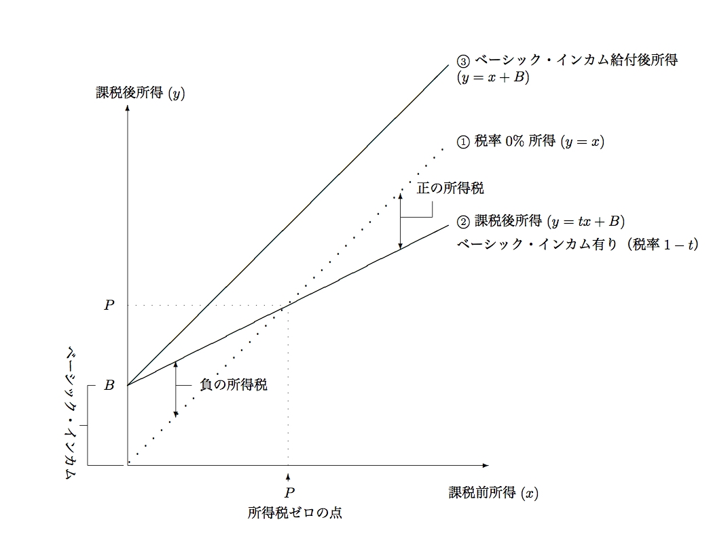

経済学で出る数学
ワークブックでじっくり攻める：問1.16解説
問1.16でとりあげたベーシック・インカムと負の所得税（給付付税額控除）はそもそも別の制度．このふたつが数式上一致することを解説するのがねらい．ただ，著者の不勉強もあって，正確な解説になっていないおそれが（；ー；）
【ベーシック・インカムの課税後所得の導出】

- 所得：$x$ 円
- 税率：$1-t$
- 所得税：$(1-t)x$ 円
- ベーシック・インカム：$B$ 円
- 課税後所得（ベーシック・インカム無）：$x-(1-t)x=tx$ 円
- 課税後所得（ベーシック・インカム有）：$tx+B$ 円
【ベーシック・インカム終わり】
【負の所得税の課税後所得の導出】
- 給付を行う所得の上限：$P$ 円
- 所得$0$円に対する給付額：$B$ 円
- 税率：$1-t$
- 負の所得税（給付額）：$B-(1-t)x$ 円, $0\leq x \leq P$のとき
- 正の所得税（納税額）：$-(1-t)(x-P)$ 円, $P\leq x$のとき（$P$円を超える所得に課税）
- 正負の所得税の連続性：$0=B-(1-t)P$ なので，$B=(1-t)P$
- 課税後所得（負の所得税）：$x+B-(1-t)x=tx+B$ 円
- 課税後所得（正の所得税）：$x-(1-t)(x-P)=x+\underbrace{(1-t)P}_{B}-(1-t)x=tx+B$ 円やはり$tx+B$ 円
【負の所得税終わり】
解答例一覧へ